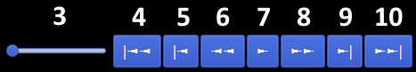

This application is learning tool designed to help university students and lecturers in modules closely related to automata theory.
The application visualises Thompsons Construction, the process of constructing automata from regular expressions, determinising nondeterministic automata and minimising automata.
Given a string, the application shows how those automata work, how it checks whether the string is part of the language described by the regular expression.
For more information on the algorithms used see Thompsons Construction (Regex to NFA) and Power Set Construction (NFA to DFA)
FSA - Finite State Automata
regex - Regular Expression
NFA - Non-deterministic finite state automata
DFA - Deterministic finite state automata
Type in a regular expression and click Generate to start Thompsons Construction.
See the generation process through (see playback coontrols below) and press the next button to progress to determinising.
To see if a string (word) is accepted by the automata, click 'Automata' in the menu bar, and click the 'test a word' button. Then type in the word at the bottom.
New: Opens a blank document
Open: Opens a regular expression saved previously and generates the non-deterministic, and deterministic automaton as well.
Save: Saves the current regular expression, and it's automaton.
Print: Prints the current stage of the automaton we are viewing right now.
Close: Closes the current tab, or whole program if no tab is open.
1 - Textbox for regular expression: Input where the user can type in a regular expression
2 - Generate: The application generates the automaton for the given regular expression, and starts the animation.
3 - A slider to change the frame. The start of the slider is thee start of the visualisation, the end is the end.
7 - Play/Pause: Starts playing the animation of the Thompsons construction, goes trough the steps of the NFA and DFA builds up.
6, 8 - Faster/Slower: Changes the speed of the animation.
5, 9 - Jump Forward/Back: Jumps to the next step of the construction.
4, 10 - Jump to the Start/End.